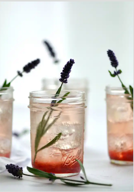

Cocktail Madness
7 Cocktail Hacks You Need to Use This Week!
Take your cocktail-making game to the next level with these simple tips that don’t require pro-bartending skills, so you can satisfy your desire for killer drinks (and party tricks) at home.

No.1 Use leftover herbs to make elegant simple syrups
For your latest herb harvest, try infusing them in simple syrups to give everything from iced tea and lemonade to cocktails and mocktails a tasty, flavorful twist. Simple syrup is incredibly easy to make and worth keeping around for a quick liquid sweetener for anything from hot coffee to cold iced tea. It's even better with a little mint thrown in, or some rosemary, or even some lemongrass.

No.2 Use jam as both a sweetner and for flavouring
Here are some suggestions to upgrade an otherwise simple cocktail combination
- Gin + lime + blueberry jam
- Tequila + lime + strawberry jam
- Whiskey + lemon + apricot jam
- Vodka + lemon + raspberry jam